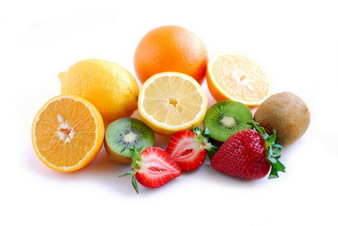

KAKO JESTI VOĆE

Svi mi mislimo da jesti voće znači samo kupovinu voća, sečenje na kriške i stavljanje u usta. To nije tako jednostavno. Važno je da znate i kako i kada se jede voće.
NAJPRE TO ZNAČI DA VOĆENE TREBA JESTI POSLE OBROKA! VOĆE TREBA JESTI NA PRAZAN STOMAK.Jedenje voća igra glavnu ulogu u detoksifikaciji vašeg organizma, kojeg snabdeva sa velikom količinom energije za mršavljenje i za druge životne aktivnosti.
PLODOVI VOĆA SU NAJVAŽNIJA HRANA
Recimo da pojedete dve kriške hleba, a zatim krišku voća. Komad voća je spreman da prođe ravno kroz želudac creva, ali ga hleb sprečava u tome.
U međuvremenu, ceo obrok se raspadne i fermentira i pretvara u kiselinu. Beznačajna količina voća dolazi u kontakt sa hranom u želucu, pospešuje probavu i sokove, pa cela masa takve hrane počinje da se kvari.
Jedite voće na prazan stomak, i to pre obroka! Čuli ste kako se ljudi žale: podrigujem svaki put kada jedem lubenicu, kada pojedem banane imam osećaj da pod hitno moram da odem u toalet, itd. To se neće desiti ako pojedete voće na prazan stomak. Voće pomešano sa drugom hranom izaziva truljenje i proizvodi gasove. Dakle, vi se zato nadimate!
To se ne događa sa nekim plodovima, kao što su npr. pomorandže i limun, jer su oni kiseli, pa u našem telu voće postaje alkalno, u skladu sa istraživanjem dr Herberta Šeltona, koji se bavio ovim problemima. Ako jedete voće na ispravan način, moćićete da steknete svu tajnu lepote, dugovečnosti, zdravlja, energije, sreće i normalnu težinu.
Ako hoćete da pijete voćni sok -pijte samo sok od svežeg voć, a ne koncentrat sokova iz konzervi. Nemojte piti zagrejan sok. Nemojte jesti ni kuvano voće, jer tada uopšte ne dobijate njegove hranljive materije. Dobijate samo ukus. Kuvanje uništava sve vitamine.
Jedenje celog ploda je bolje nego pijenje sokova. Ako hoćete da pijete voćni sok, pijte ga sporo - gutljalj po gutljalj, jer morate da ga pomešate sa pljuvačkom pre gutanja. Svakog 3. dana možete jesti voće da bi brzo očistili svoje telo od toksina. Ako jedete samo voće i pijete sok 3 dana i sami ćete se iznenaditi da će vam vaši prijatelji kazati da izgledate veoma osveženi!
KIVI: mali ali moćni i dobar izvor kalijuma, magnezijuma, vitamina E i vlakana. Njegov sadržaj C vitamina je dvostruko veće od onog kod pomorandže!
JABUKA: da li jabuka zaista odlaže dan odlaska kod lekara? Iako jabuka ima mali sadržaj vitamina C, on je antioksidantan i flavonoidan tj. sadrži grupu organskih komponenti u kori plodova i povećava aktivno delovanje vitamina C, čime pomaže da se smanji rizik od raka debelog creva, srčani i moždani udar.
JAGODA: jagoda je zaštitno voće. Jagode spadaju među glavno voće koje ima največu antioksidantnu moć i štite organizam od nastanka raka, začepljenja krvnih sudova, slobodnih radikala.
POMORANDŽA: jedenje 2-4 pomorandže dnevno može vam pomoći da se zaštitite od prehlade, snizite holesterol, sprečite i rastvorite kamenje bubrega i smanjite rizik od raka debelog creva.
LUBENICA: je najbolje piće za gašenje žeđi. Sastoji se od 92% vode, a takođe je dupke puna ogromnim dozama glutationa, koji pomaže i pojačava naš imuni sistem. Takođe je ključni izvor likopena, oksidanta u borbi protiv raka. U lubenici se nalazi vitamin C i kalijum.
GUAVA I PAPAJA: su vrhunski šampioni po sadržaju vitamina C. One su nedvosmisleni šampioni po njihovom visokom sadržaju vitamina C. Guava je takođe bogata vlaknima, koja pomažu u sprečavanju opstipacije(zatvorene stolice). Papaja je bogata karotinom i dobro deluje na vaš očni vid.